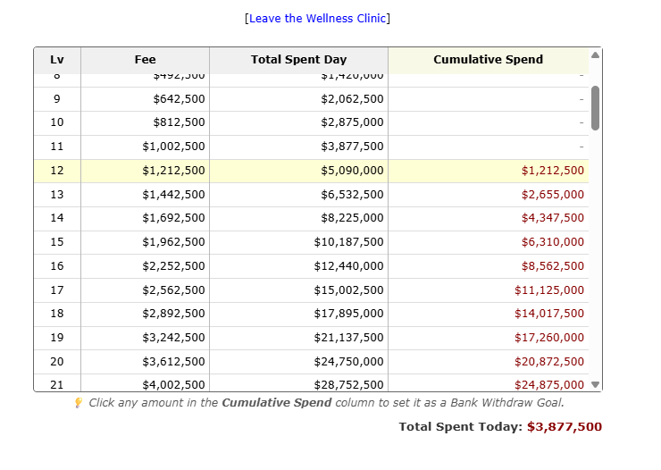

Track your cumulative hospital fees and securely set Bank Withdraw goals directly from the UI.
The Wellness Clinic Helper automatically parses the amount of money you have spent today on healthcare and generates a comprehensive tracking table. It highlights exactly what level you are on and calculates the cumulative future cost to reach any level up to 100.

The Wellness Clinic showing the cumulative fee tracker and bank goals.
If you want to pull exactly enough cash from your Piggy Bank to cover a future clinic session, you can click on any amount in the Cumulative Spend column. This will automatically highlight the cell blue and push the exact dollar amount to the Piggy Bank as your new "Wellness" withdraw goal!